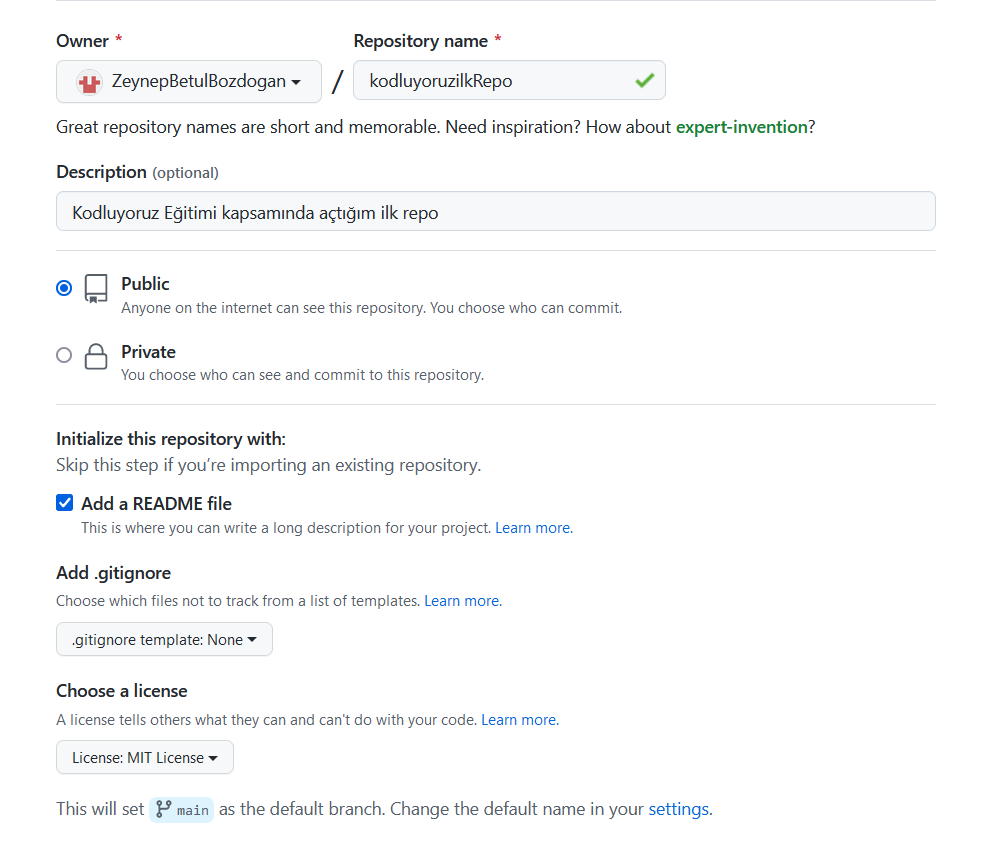

Bu repo Kodluyoruz Kodluyoruz Front-End Eğitiminde oluşturduğumuz ilk repo. İçerisinde bir adet README dosyası, bir adet de index.html barındırıyor
Öncelikle projeyi clonelayın. git git clone https://github.com/ZeynepBetulBozdogan/kodluyoruzilkRepo.git
Projeyi cloneladıktan sonra Visual Studio Code programında açınız.
cd kodluyoruzilkrepo code .
Pull requestler kabul edilir. Büyük değişiklikler için lütfen önce neyi değiştirdiğinizi tartışmak için bir konu açınız.